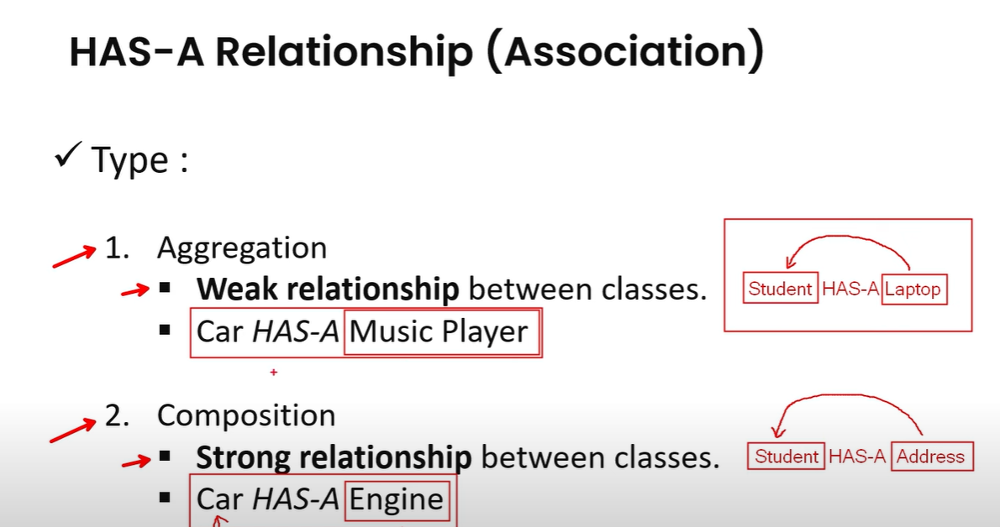

🎯 Complete Guide to OOP Relationships & Coupling
📚 What Will You Learn?
- IS-A Relationship - When one thing is a type of another
- HAS-A Relationship - When one thing contains another
- USES-A Relationship - When one thing uses another temporarily
- Tight Coupling - Bad way of connecting classes
- Loose Coupling - Good way of connecting classes

1. 🔗 IS-A Relationship (Inheritance)
📖 Simple Explanation:
When we say "A IS-A B", it means A is a type of B. Like saying "Dog is a type of Animal".
🌍 Real World Example:
- Car IS-A Vehicle
- Apple IS-A Fruit
- Student IS-A Person
💻 Java Code Example:
// Parent class (general)
class Animal {
void eat() {
System.out.println("Animal is eating");
}
void sleep() {
System.out.println("Animal is sleeping");
}
}
// Child class (specific) - Dog IS-A Animal
class Dog extends Animal {
void bark() {
System.out.println("Dog is barking: Woof!");
}
}
🎯 How to Use:
public class Main {
public static void main(String[] args) {
Dog myDog = new Dog();
// Dog can do everything Animal can do
myDog.eat(); // From Animal class
myDog.sleep(); // From Animal class
// Plus its own special things
myDog.bark(); // From Dog class
}
}
Animal is eating
Animal is sleeping
Dog is barking: Woof!
2. 🏠 HAS-A Relationship (Association, Aggregation, Composition)
 `📖 Simple Explanation:
HAS-A means one class contains or uses another class. There are 3 types:
- Association: Just a link between two classes.
- Aggregation: HAS-A relationship where the part can exist independently.
- Composition: HAS-A relationship where the part cannot exist without the whole.
🌍 Real World Examples:
- Aggregation: Car HAS-A MusicPlayer (can be added/removed)
- Composition: Car HAS-A Engine (tightly bound and essential)
💻 Java Code Examples (With Comments):
🔹 Aggregation: Car HAS-A MusicPlayer
// Aggregation Example
// MusicPlayer class - can exist independently
class MusicPlayer {
void play() {
System.out.println("Playing music...");
}
}
// Car class that receives MusicPlayer from outside (Aggregation)
class Car {
private MusicPlayer player; // Aggregation: Car HAS-A MusicPlayer
// Constructor that accepts a MusicPlayer object as parameter
Car(MusicPlayer player) {
// 'this' keyword refers to the current object's variable
this.player = player;
// This means: assign the passed-in MusicPlayer to the car's own player
}
void usePlayer() {
System.out.println("Car using music player:");
player.play(); // Using the aggregated MusicPlayer object
}
}
🔸 Composition: Car HAS-A Engine
// Composition Example
// Engine class - represents the essential component of a Car
class Engine {
String type;
// Constructor to initialize engine type
Engine(String type) {
this.type = type;
}
void start() {
System.out.println(type + " engine starting...");
}
}
// Car class that creates its own Engine internally (Composition)
class Car {
private Engine engine; // Composition: Car HAS-A Engine
// Constructor that creates the Engine object inside
Car(String engineType) {
this.engine = new Engine(engineType); // Object created internally → strong binding
}
void startCar() {
System.out.println("Starting car...");
engine.start(); // Using the composed Engine object
}
}
🎯 How to Use:
public class Main {
public static void main(String[] args) {
// Aggregation: passing the object from outside
MusicPlayer player = new MusicPlayer(); // Independent object
Car carWithMusic = new Car(player); // Injected into Car
carWithMusic.usePlayer();
// Composition: object created inside the class
Car carWithEngine = new Car("Diesel"); // Engine created within Car
carWithEngine.startCar();
}
}
Car using music player:
Playing music...
Starting car...
Diesel engine starting...
-
this.player = player; → "this" refers to the current object's variable; helps distinguish
from parameter.- Aggregation → Object passed from outside, can exist independently.
- Composition → Object created inside class, tightly bound to the lifecycle.
- Both show "HAS-A" relationships in object-oriented design.
3. 🤝 USES-A Relationship (Dependency)
📖 Simple Explanation:
When we say "A USES-A B", it means A uses B to do something, but doesn't own B. Like "Driver uses a Car".
🌍 Real World Example:
- Student USES-A Library (doesn't own it)
- Chef USES-A Kitchen (might not be his kitchen)
- Teacher USES-A Whiteboard (school's whiteboard)
💻 Java Code Example:
// Class that can be used
class Printer {
void print(String document) {
System.out.println("Printing: " + document);
}
}
// Class that USES another class
class Student {
private String name;
Student(String name) {
this.name = name;
}
// Student USES-A Printer
void printAssignment(Printer printer, String assignment) {
System.out.println(name + " wants to print assignment");
printer.print(assignment); // Using the printer
System.out.println("Assignment printed successfully!");
}
}
🎯 How to Use:
public class Main {
public static void main(String[] args) {
// Create objects
Printer libraryPrinter = new Printer();
Student john = new Student("John");
Student mary = new Student("Mary");
// Both students can USE the same printer
john.printAssignment(libraryPrinter, "Math Homework");
mary.printAssignment(libraryPrinter, "Science Project");
}
}
John wants to print assignment
Printing: Math Homework
Assignment printed successfully!
Mary wants to print assignment
Printing: Science Project
Assignment printed successfully!
4. ❌ Tight Coupling (Bad Way)
📖 Simple Explanation:
Tight Coupling means classes are stuck together too much. If you change one, the other breaks. It's like having a phone charger that only works with one specific phone model.
🌍 Real World Example:
Imagine you buy a car where the radio is permanently welded to the dashboard. If the radio breaks, you have to replace the whole dashboard! That's tight coupling.
💻 Bad Java Code Example:
// Tightly coupled - BAD!
class EmailSender {
void sendEmail(String message) {
System.out.println("Sending email: " + message);
}
}
class NotificationService {
private EmailSender emailSender = new EmailSender(); // Stuck with Email only!
void notify(String message) {
// Can ONLY send emails, nothing else
emailSender.sendEmail(message);
}
}
😢 Problems with Tight Coupling:
- Hard to change: Want SMS instead of Email? You have to modify NotificationService
- Hard to test: Can't test without actually sending real emails
- Not flexible: Stuck with one way of doing things
5. ✅ Loose Coupling (Good Way)
📖 Simple Explanation:
Loose Coupling means classes can work together but aren't stuck to each other. Like having a universal phone charger that works with any phone.
🌍 Real World Example:
Modern cars have standard ports (USB, aux, Bluetooth). You can connect any device that supports these standards. That's loose coupling!
💻 Good Java Code Example:
// Interface - the "standard"
interface MessageSender {
void sendMessage(String message);
}
// Different implementations
class EmailSender implements MessageSender {
public void sendMessage(String message) {
System.out.println("📧 Email sent: " + message);
}
}
class SMSSender implements MessageSender {
public void sendMessage(String message) {
System.out.println("📱 SMS sent: " + message);
}
}
class WhatsAppSender implements MessageSender {
public void sendMessage(String message) {
System.out.println("💬 WhatsApp sent: " + message);
}
}
// Loosely coupled - GOOD!
class NotificationService {
private MessageSender sender;
// Can accept ANY type of sender
NotificationService(MessageSender sender) {
this.sender = sender;
}
void notify(String message) {
sender.sendMessage(message); // Don't care HOW it sends, just send!
}
}
🎯 How to Use (The Magic!):
public class Main {
public static void main(String[] args) {
String message = "Hello! Your order is ready.";
// Same NotificationService can use different senders!
NotificationService emailNotifier = new NotificationService(new EmailSender());
emailNotifier.notify(message);
NotificationService smsNotifier = new NotificationService(new SMSSender());
smsNotifier.notify(message);
NotificationService whatsappNotifier = new NotificationService(new WhatsAppSender());
whatsappNotifier.notify(message);
}
}
📧 Email sent: Hello! Your order is ready.
📱 SMS sent: Hello! Your order is ready.
💬 WhatsApp sent: Hello! Your order is ready.
😊 Benefits of Loose Coupling:
- Easy to change: Want to add Discord notifications? Just create DiscordSender!
- Easy to test: Create a FakeSender for testing
- Very flexible: Can switch between different methods anytime
📊 Quick Comparison Table
| Relationship | Simple Meaning | Real World Example | Java Code Hint |
|---|---|---|---|
| IS-A | One thing is a type of another | Dog IS-A Animal | class Dog extends Animal |
| HAS-A | One thing contains another | Car HAS-A Engine | Engine engine = new Engine() |
| USES-A | One thing uses another temporarily | Student USES-A Library | void study(Library lib) |
| Tight Coupling | Classes stuck together (BAD) | Welded car radio | new SpecificClass() inside |
| Loose Coupling | Classes work together but flexible (GOOD) | Universal charger | Use interfaces/parameters |
🎓 Complete Example: All Concepts Together
📱 Let's Build a Simple Phone System
// Interface for loose coupling
interface Speaker {
void playSound(String sound);
}
// Different speaker implementations
class LoudSpeaker implements Speaker {
public void playSound(String sound) {
System.out.println("🔊 LOUD: " + sound.toUpperCase());
}
}
class SoftSpeaker implements Speaker {
public void playSound(String sound) {
System.out.println("🔉 soft: " + sound.toLowerCase());
}
}
// Base class for IS-A relationship
class Device {
protected String brand;
Device(String brand) {
this.brand = brand;
}
void powerOn() {
System.out.println(brand + " device is turning on...");
}
}
// Smartphone IS-A Device (Inheritance)
class Smartphone extends Device {
private Speaker speaker; // HAS-A Speaker (Association)
Smartphone(String brand, Speaker speaker) {
super(brand); // Call parent constructor
this.speaker = speaker; // Loose coupling through interface
}
void makeCall(String number) {
System.out.println("📞 Calling " + number + "...");
speaker.playSound("Ring ring!");
}
// USES-A relationship - uses WiFi temporarily
void browseInternet(WiFi wifi) {
wifi.connect();
System.out.println("🌐 Browsing internet on " + brand + " phone");
wifi.disconnect();
}
}
// Another class for USES-A relationship
class WiFi {
private String networkName;
WiFi(String networkName) {
this.networkName = networkName;
}
void connect() {
System.out.println("📶 Connected to " + networkName);
}
void disconnect() {
System.out.println("📶 Disconnected from " + networkName);
}
}
🎯 Using All Concepts:
public class Main {
public static void main(String[] args) {
// Create different speakers (loose coupling)
Speaker loud = new LoudSpeaker();
Speaker soft = new SoftSpeaker();
// Create smartphones (IS-A Device, HAS-A Speaker)
Smartphone iPhone = new Smartphone("iPhone", loud);
Smartphone android = new Smartphone("Samsung", soft);
// Create WiFi for USES-A relationship
WiFi homeWifi = new WiFi("Home_Network");
System.out.println("=== iPhone Demo ===");
iPhone.powerOn(); // From Device class (IS-A)
iPhone.makeCall("123-456"); // Uses internal speaker (HAS-A)
iPhone.browseInternet(homeWifi); // USES-A WiFi
System.out.println("\n=== Android Demo ===");
android.powerOn(); // From Device class (IS-A)
android.makeCall("789-012"); // Uses internal speaker (HAS-A)
android.browseInternet(homeWifi); // USES-A WiFi
}
}
=== iPhone Demo ===
iPhone device is turning on...
📞 Calling 123-456...
🔊 LOUD: RING RING!
📶 Connected to Home_Network
🌐 Browsing internet on iPhone phone
📶 Disconnected from Home_Network
=== Android Demo ===
Samsung device is turning on...
📞 Calling 789-012...
🔉 soft: ring ring!
📶 Connected to Home_Network
🌐 Browsing internet on Samsung phone
📶 Disconnected from Home_Network
🎯 Key Takeaways
Remember These Simple Rules:
- IS-A (extends): Use when something is a type of something else
- HAS-A: Use when something contains something else as a part
- USES-A: Use when something uses something else temporarily
- Avoid Tight Coupling: Don't hardcode specific classes inside other classes
- Prefer Loose Coupling: Use interfaces and parameters to make code flexible
🌟 Golden Rule: Always think "Can I easily change this later?" If the answer is no, you probably have tight coupling!
🎉 Congratulations!
You now understand all the important OOP relationships and coupling concepts!
Practice these concepts with your own examples to master them completely.